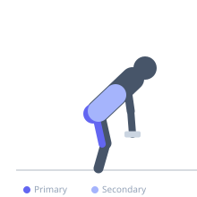
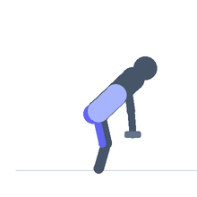

Exercise guide / B-Stance / Kickstand Romanian Deadlift
B-Stance / Kickstand Romanian Deadlift
The B-stance Romanian deadlift uses a staggered foot position where the front foot does the work and the rear foot rests on its toes for balance only. It functions as an effectively unilateral RDL while providing slightly more stability than a true single-leg version. The lead leg's hamstrings and glute are the primary movers, making it excellent for addressing limb asymmetries and training hamstrings with greater unilateral stimulus.
Primary muscles
biceps femoris long head
semitendinosus
semimembranosus
gluteus maximus
Secondary muscles
erector spinae
gluteus medius
Stabilizers
transverse abdominis
tensor fasciae latae
Equipment
Dumbbell (Fixed)
Optional
Standard Barbell


Starting position
- Stand holding dumbbells. Stagger your feet so one foot is about half a step ahead. The rear foot rests on its toes only — it is a kickstand for balance, not for weight-bearing.
Setup
- Hold dumbbells in front of the thighs. Distribute almost all weight to the front leg before beginning.
Steps
- Step 1: Hinge at the hip of the front leg, pushing the hip back as the torso lowers.
- Step 2: Lower the dumbbells along the front leg, feeling a deep stretch in the front leg's hamstring.
- Step 3: Descend until the torso is roughly parallel to the floor or as far as hamstring flexibility allows.
- Step 4: Drive through the front heel and squeeze the front glute to return to the standing position.
Coaching cues
- Rear foot is just a kickstand
- Push the hip back
- Squeeze the glute to stand up
Breathing
- Inhale and brace before the hinge. Exhale at the top.
Range of motion
- Descend as far as hamstring flexibility allows without spinal flexion.
Tempo
- 3-1-1-0
Common mistakes
- Rear foot bearing weight, reducing the unilateral stimulus
- Lower back rounding at the bottom
- Hip rotating outward on the working side
Safety
- Keep the spine neutral throughout — do not round the lower back to gain extra depth
Training
- strength: 5–8 reps
- hypertrophy: 10–15 reps
- strength: 3–4 sets
- hypertrophy: 3–4 sets
- Rest: {'strength': 120, 'hypertrophy': 90}